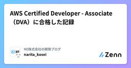
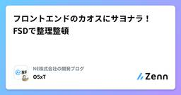

NE株式会社の開発ブログのフィード
https://zenn.dev/p/neinc_tech
NE株式会社のエンジニアを中心に更新していくPublicationです。 NEでは、「コマースに熱狂を。」をパーパスに掲げ、ECやその周辺領域の事業に取り組んでいます。 Homepage: https://ne-inc.jp/
フィード

AWS Certified Developer - Associate（DVA）に合格した記録
NE株式会社の開発ブログのフィード
はじめにAWS Certified Developer - Associate（DVA）に合格したので、勉強内容や感想などを記録として残しておきます。 前提受験時点での私のスペックは以下の通りです。バックエンドエンジニア歴7年程度AWS CLF-C02（Cloud Practitioner）取得済みAWS実務経験は4,5年くらいずっとガッツリ触っているというよりは、案件によっては少し触れることがあった程度Lambda、API Gateway、DynamoDBなどアプリケーション寄りのコンポーネントに触れる機会は程々にあり 勉強方法勉強期間は1ヶ月程度...
1日前

フロントエンドのカオスにサヨナラ！FSDで整理整頓
NE株式会社の開発ブログのフィード
はじめにNEアドベントカレンダーの10日目の記事です。こんにちは、WebエンジニアのO5xTです！普段は新規アプリ開発チームに所属していて、フロントエンドとバックエンドの両方を触っているのですが、今回はその中でも特にフロントエンド寄りの設計についてお話ししようと思います。そして今回のテーマは Feature-Sliced Design (FSD)！ざっくりした概要は本文で紹介しますが、ちょっと自分の解釈も入っているので、もっと詳しく知りたい方は以下の公式リンクもどうぞ。https://feature-sliced.design FSDとは？Feature-Slice...
4日前
手に馴染む開発ツールを揃えて新年を迎える
NE株式会社の開発ブログのフィード
!infomationこの記事は NE Advent Calendar 2025 の9日目の記事です！！！ 概要今年のうちに開発を快適に進めるために、使っているツールを少しでも使いやすくし、今はあまり使っていないツールを手放すようなことをやりました。いいなと思ったら同じことでなくていいので、ツールの手入れをしてみてほしいです🦧️ やったことシンプルなDotfilesマネージャの作成スニペットツールの見直しとコマンドチートシートの作成 シンプルなDotfilesマネージャの作成詳細はあとでつらつら書きます。 作成したもの配置したいパス -> 実体...
5日前
「あけおめ！」を大切にできるサイトを作ったよ。
NE株式会社の開発ブログのフィード
!この記事は NE Advent Calendar 2025 の7日目の記事です。ハッピーホリデー。こんにちは。元エンジニアの正訓（まさくに）です。ジョブチェンジしてここ2年くらいはは事業のことを見るようになりました。ので、実は何やかんや事業のことやマネジメントのことを話した方が見てもらえるのかもなぁーとうっすら感じたりするんですが、アドベントカレンダーは作ったものを書きたい、と緩い自分ルールがあるので、いったんそっちは無視します。とは言っても便利な時代になりましたね。ZennでもQiitaでも、「コーディングのチップス」みたいなのはみるみる減って、だいたいがAIの話に塗り替え...
6日前

直近の小規模PJで「設計の壁」にぶつかった話
NE株式会社の開発ブログのフィード
はじめにNEアドカレ6日目、よろしくお願いします！NE株式会社が自分たちの興味あるテーマについて自由に書いていきます。 概要直近の小規模PJにて、初めて設計から携わることが出来ました。今までは実装を任される事が多く、設計は実務で初経験だったので多くの学びがありました。この記事ではそれについて書いていきます。今はコーダーをやっているが、設計に興味がある方に読んでいただけると嬉しいです！ 最初の設計：小規模故の甘い見積もり当初の要件は、非常にシンプルなものでした。この時の自分の感想はこの程度の処理なら大丈夫だろう開発自体でずっこける事は絶対にないだろう...
8日前

LLMに自分を憑依させてみる。
NE株式会社の開発ブログのフィード
!この記事はNEアドベントカレンダー5日目の記事になります。 はじめにこんにちは、まさき。です。さて、わたしは、コードを書くのも、アイデアの壁打ちやふりかえりもAIと一緒にやっているような人間なのですが、業務でコードを書いたり、プロダクトでAIを活用するうちに、ChatGPTの元となっている、GPT(Generative Pre-Trained Transformer)の仕組みをもっと理解したほうがいいな、と思うことが多くなってきました。そこで、GPTというものを改めて自分のものとするために、OpenAIから出ているOSSの大規模言語モデルである、gpt-oss-20bを ...
9日前
ソフトウェアエンジニアからデータエンジニアへ転換した二人のキャリア観について
NE株式会社の開発ブログのフィード
前書き・おことわりこの記事は NE株式会社のアドベントカレンダー 4日目の記事です。データエンジニアとして働くことを考えたことはありますか? NE株式会社には「元ソフトウェアエンジニア・現データエンジニア」というメンバーが二人います。彼らの持つキャリア観がどのようなものであるのか、利用している技術についての変遷がどういったものか、チームでの働き方についても聞いてみました。聞き手はデータ事業推進部マネージャーの三原でお送りします。 話し手についていずれもインタビュー時点での情報です 甲斐 愛佳NE株式会社 データ事業推進部所属。新卒入社後、Webアプリケーションエン...
10日前
最近業務でよく使うブックマークレット３選
NE株式会社の開発ブログのフィード
概要アドカレの季節なので、私が最近業務でよく使うブックマークレットをご紹介します。ブックマークレットとは、ブラウザのブックマークとして保存できる小さなJavaScriptコードのことで、ワンクリックで便利な機能を実行できます。ブラウザの拡張機能をインストールする必要がなく、どのブラウザでも簡単に使えるのが魅力です。今回は、私が実際に業務で活用している3つのブックマークレットを紹介します。それぞれの使い方や活用シーンも合わせて説明しますので、ぜひ参考にしてみてください。 ブックマークレットたち 1. 今開いているページをポップアップで開くjavascript:ope...
12日前
Google DriveにファイルをアップロードしたらWebページが公開される仕組みを作った
NE株式会社の開発ブログのフィード
はじめに今年もアドベントカレンダーはじまりました！NEアドベントカレンダーの1日目の記事です！NE株式会社が自分たちの興味あるテーマについて自由に書いていきます。言い出しっぺの法則で毎年1日目をいただいています。毎年一緒に参加して盛り上げてくれる皆さんに感謝です👏 概要と背景お客様と商談をしていく中で、お客様が直接触れるWebモック画面を提供したい、というニーズがチーム内にありました。今の時代、生成AIにより簡単なWebモックであればすぐに作れる世の中になってきています。これを毎回Webサーバー立てて提供する、だと手間であったため最速でモックを作ってお客様に対し...
13日前
元エンジニア人事が語る！初めての2Daysインターン運営の裏側
NE株式会社の開発ブログのフィード
はじめにこんにちは、WebエンジニアのO5xTです！NE株式会社では、一昨年からオフィスに学生を招待し、開発体験をしてもらうエンジニアインターンシップを開催しています！https://zenn.dev/neinc_tech/articles/6fe19f069e818dhttps://zenn.dev/neinc_tech/articles/1cbb4c6dd866f0私自身、第1回には学生として参加しましたが、第3回となる今年は運営側として関わることになりました。第3回となるとインターンシップ自体も進化していて、今年は初めて新横浜オフィスでの開催、さらに初の2日間インタ...
1ヶ月前
受注予測アプリの開発
NE株式会社の開発ブログのフィード
はじめにこんにちは！NEのデータ事業推進部でインターン生としてお世話になっている山口晃基です。私は社内の受注データや取引企業データなどを活用し、効果検証や機械学習を用いたデータ分析に取り組んでいます。本記事では、私が開発した「受注予測アプリ」について、その背景と狙いをご紹介します。 開発経緯NEはEC事業者向けにコンサルティングを行っており、その中で「今後どの商材が伸びるのかを把握したい」という需要がありました。従来は担当者の経験や直感に依存する部分が大きく、データに基づいた予測を迅速に行う仕組みは整っていませんでした。そこで私は、この需要に応える形で、どの商材に対しても...
2ヶ月前
AWS Compute OptimizerがAurora I/O-Optimizedの推奨事項に対応したことで導入判断が容易になりました
NE株式会社の開発ブログのフィード
はじめに以前こちらの記事で Aurora I/O-Optimized によるコスト削減効果についてご紹介しました。https://zenn.dev/neinc_tech/articles/604b2687ee015d記事投稿当時は、Aurora I/O-Optimized を導入すべきかどうかを判断する際、Cost Explorer で実際のコスト状況を確認し、自分で計算して判断する必要がありました。判断の基準となるのは、次の条件を満たしているかどうかです。ストレージ料金の差分 + インスタンス料金の差分 < I/O 料金ここでいう「差分」とは、Aurora S...
3ヶ月前
株式会社クイックさんと合同勉強会をしました！
NE株式会社の開発ブログのフィード
はじめにこんにちは！NEのさくらいです！NEは6月に、株式会社クイックさんとエンジニア合同勉強会を開催しました。今回はクイックさんに新横浜のNE本社にお越しいただき、なんと参加者総勢31名！！私も運営として企画立案から関わらせていただいたので、そちらのレポートをお届けします✍️ きっかけ2024年12月のPHPカンファレンス、2025年3月のPHPerKaigi 2025の懇親会にて、両社の参加者同士の交流があったことがきっかけです！その後、クイックさんから私さくらい宛にXでご連絡をいただき、NEがよく他社さんと合同勉強会をしているという話から今回に繋がりました。まさに...
3ヶ月前
n8nで業務を効率化しよう
NE株式会社の開発ブログのフィード
はじめに最近n8nを触る機会があったので、n8nとは何か、何ができるのかを簡単に紹介します。 n8nとはn8n (node automation → nodemation → n8n) は、オープンソースのワークフロー構築・自動化ツールです。GUI上で「ノード」を組み合わせてノーコードでワークフローを組むことも、必要であれば自分でコードを書いて複雑なアルゴリズムを実行することも可能です。クラウド版は有料ですが、セルフホスティング（かつCommunity Edition）であれば無料で利用可能です。公式のDockerイメージも提供されているため、ローカル環境で手軽に試すことが...
4ヶ月前
causalimpactを使ってオフライン施策の効果検証をしてみた
NE株式会社の開発ブログのフィード
はじめにこんにちは、NEのデータ事業推進部（DSO）でデータアナリストをしている本岡です。私は普段、EC業界のデータを用いた売上や顧客行動の分析、当社のデータ基盤の整備なども担当しています。本日は「ある施策が本当に効果があったのか？」を検証したいときに役立つ手法、Causal Impact（介入効果分析）についてご紹介します。 実際のデータを用いて、どのように施策の効果を検証できるのかを解説します。 なぜ効果測定が難しいのか？たとえば、あなたがECサイトで大型セールを実施したとします。セール直後に売上が大きく伸びたとしたら、多くの人は「セールが成功した！」と思うはずで...
5ヶ月前
ゴールから考える研修設計！NEの新卒エンジニア研修を大公開⭐️スペシャル
NE株式会社の開発ブログのフィード
はじめにこんにちは！暑い日が続きますね🌻実は私さくらい、今年の25卒新卒エンジニア研修にて、初めての研修責任者を担当しました！企画の設計から具体のコンテンツ決め、実際の研修進行などをさせていただきました。ありがたいことに多方面から「良い研修だった👍」と評価いただけたので、今回はNEの新卒エンジニア研修について、大公開スペシャルです！↓研修を受けた側として新卒目線の記事も出ているので、ぜひそちらもあわせてご覧ください〜🙌https://zenn.dev/neinc_tech/articles/aad61d4f0fa1f6https://zenn.dev/neinc_te...
5ヶ月前
新卒エンジニアの研修振り返り
NE株式会社の開発ブログのフィード
はじめにこんにちは、WebエンジニアのO5xTです！現在はネクストエンジン事業部の新機能開発チームにジョインし、ネクストエンジンアプリの開発に携わっています。入社してから2ヶ月が経ち、2週間のエンジニア研修が終了したので、研修で学んだことや感じたことをまとめてみたいと思います！ 入社のきっかけ研修の話に入る前に、まず私がNE株式会社に入社したきっかけについてお話しします。私はもともと、NE株式会社が小田原に本社を構えていた頃に開催された1Dayインターンシップに参加したことがあります！https://zenn.dev/neinc_tech/articles/6fe19...
6ヶ月前
新卒エンジニアの2ヶ月間：研修からリリース、NEでの成長記録
NE株式会社の開発ブログのフィード
はじめにこの記事は、NE株式会社への入社を考えている学生エンジニアの皆さんに向けて書いています。特に、新卒として入社した際の研修内容や、実際にリリースまで経験できる環境について知りたい方に読んでいただけると嬉しいです！読後に「NEってこんなに手厚い研修があるんだ」「新卒でもすぐにリリース経験ができるんだ」ということが伝わっていると、筆者としても大変嬉しいです。 自己紹介みなさんこんにちは！入社してもう2ヶ月が経ちました、ながえです。（早いね...）大阪からはるばる小田原へ...と思いきや本社が新横浜に移った男です。本社移転の影響で初めて来ましたが、住みやすい街で3ヶ月で...
6ヶ月前
ルーキーよ。PHPerKaigiに行かないか。なハナシ
NE株式会社の開発ブログのフィード
はじめにみなさんこんにちは！NE株式会社に入社して2年目になったマツケンです！今回は3月22日から23日にかけて参加したPHPerKaigiでの体験をまとめました。phperKaigiってなに？実際行ってみてどうだったの？新卒、若手が行ったらどんなメリットがあるの？このようなことをお伝えしたうえで、ぼくも、わたしもカンファレンスに参加してみよう！ となれば幸いです。ぜひ一緒に行きましょう。 phperKaigiとは？PHPerKaigi（ペチパーカイギ） は、PHPエンジニアおよびWeb技術のエンジニア向けの技術カンファレンスです。現在PHPを使用している人、...
6ヶ月前
新人におすすめのツール・TIPS紹介
NE株式会社の開発ブログのフィード
はじめに今年から社会人として仕事を始めた方向けにおすすめのツールやTIPSを、以前社内で取ったアンケートからいくつか抜粋して紹介します。開発者向けのものもありますが、そうでない方にも有用な内容もいくつかあるので、是非参考にしてみてください。一部Mac固有のものもありますが、Windowsでも類似のツールや設定方法があると思うので、ぜひ探してみてください。 一般 PCの設定マウス・トラックパッドの感度調整初期状態から変更しておらず、狙った位置にカーソルがピッタリ止まりにくい人は、一度色々試してみるとより作業しやすい感度が見つかるかもポインタの加速もONがおすすめ...
7ヶ月前